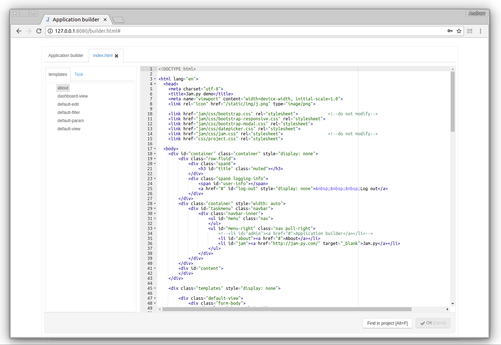

Index.html¶
When user opens a Jam.py application in a Web browser, the browser first loads the index.html file. This file is located in the root directory of a project.
It is the usual html file containing links to css and js files, that client application is using. The files that start with jam are located in the jam folder of the Jam.py package directory on the server.
For example
<link href="jam/css/jam.css" rel="stylesheet">
If needed, other files can be added here. For example some charting library. It is better to place them in the js and css folders of the static directory of the project.
For example
<script src="static/js/Chart.min.js"></script>
The index.html body tag have a div with class templates, that
contains html templates of the project forms. See
Forms
and
Form templates.
for details.
At the end of the file there is a following script:
<script>
$(document).ready(function(){
task.load()
});
</script>
In this script the load method of the task, that has been created when jam.js file was loaded, is called that loads information about the task tree from the server and, based on this information, builds its tree, loads modules, assigns event handlers to its items and triggers on_page_loaded event. See Initializing application